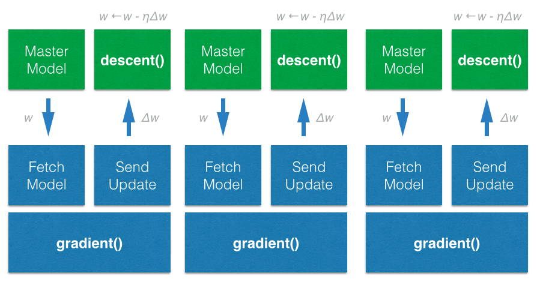
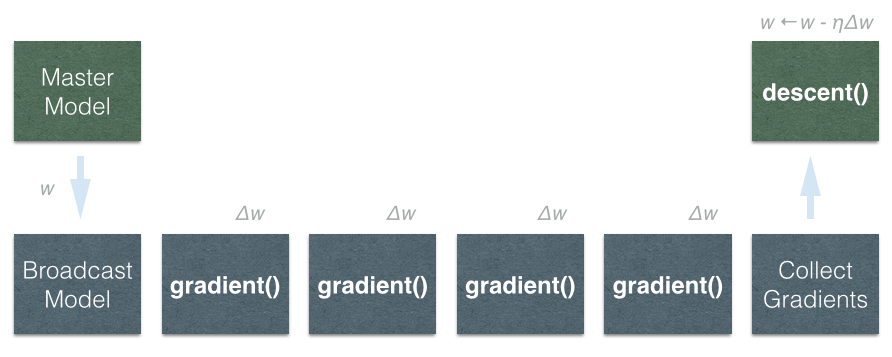
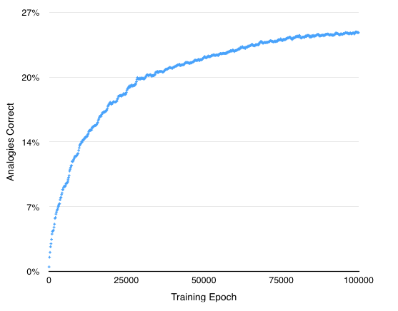

Introduction
Training deep belief networks requires extensive data and computation. DeepDist accelerates model training by distributing stochastic gradient descent for data stored on HDFS / Spark.
Training deep belief networks requires extensive data and computation. DeepDist accelerates model training by distributing stochastic gradient descent for data stored on HDFS / Spark.
DeepDist implements a Sandblaster-like stochastic gradient descent. It starts a master model server that integrates updates in real time. On each data node, DeepDist fetches the model from the master, and then calls gradient(). After computing gradients for the RDD partitions, gradient updates are send the the server. On the server, the master model is updated by descent(). Models can converge faster since gradient updates are constatently synchronized between the nodes.
Figure 1. The model is store on the master node and served on port 5000. The compute nodes fetch the model before processing each partition, and send the gradient updates back the server. The server can perform stoachastic gradient descent (or other optmization procedures) with the node updates.
In contrast, Mahout and MLlib compute all gradients over the (subsampled) data before updating the model. Gradient updates can be less frequent and deep belief models might converge slower. 
Figure 2. Classical machine learning libraries broadcast the model parameters to the nodes, and then compute the gradients in parallel. At the end of a computational step, the gradients are collected and transfered to the master.
Let's train a word2vec model on all of wikipedia in 15 lines of Python code:
The model can be tested with 'woman' - 'man' + 'king' and computes: 'queen'.
Training speed can be greatly enhanced by adaptively adjusting the learning rate by AdaGrad. The complete Word2Vec model with 900 dimensions can be trained on the 19GB wikipedia corpus (using the words from the validation questions).
Figure 2. Performance on a test set (analogy questions) after training of a Word2Vec model with stochastic AdaGrad gradient descent.
J Dean, GS Corrado, R Monga, K Chen, M Devin, QV Le, MZ Mao, M’A Ranzato, A Senior, P Tucker, K Yang, and AY Ng. Large Scale Distributed Deep Networks. NIPS 2012: Neural Information Processing Systems, Lake Tahoe, Nevada, 2012.
T Mikolov, I Sutskever, K Chen, G Corrado, and J Dean. Distributed Representations of Words and Phrases and their Compositionality. In Proceedings of NIPS, 2013.
T Mikolov, K Chen, G Corrado, and J Dean. Efficient Estimation of Word Representations in Vector Space. In Proceedings of Workshop at ICLR, 2013.
| DeepDist: | https://github.com/dirkneumann/deepdist |
| Wikipedia data: | https://dumps.wikimedia.org/enwiki |
| Extracting text: | http://cs.fit.edu/~mmahoney/compression/textdata.html |